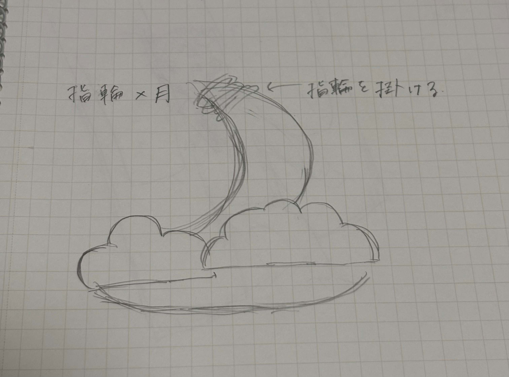
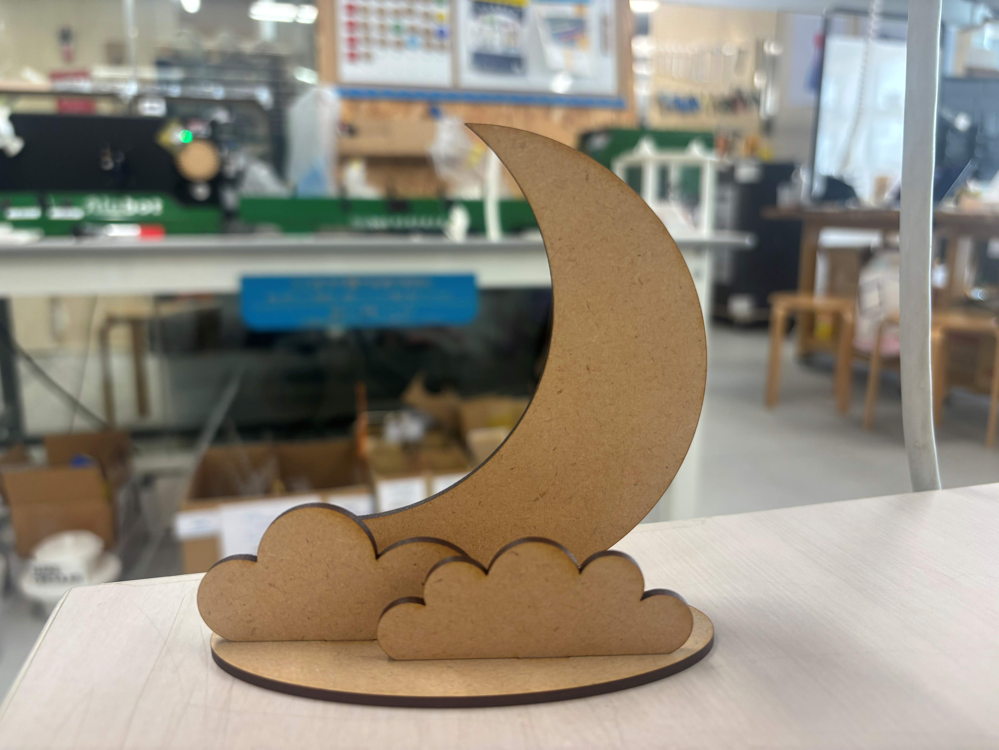
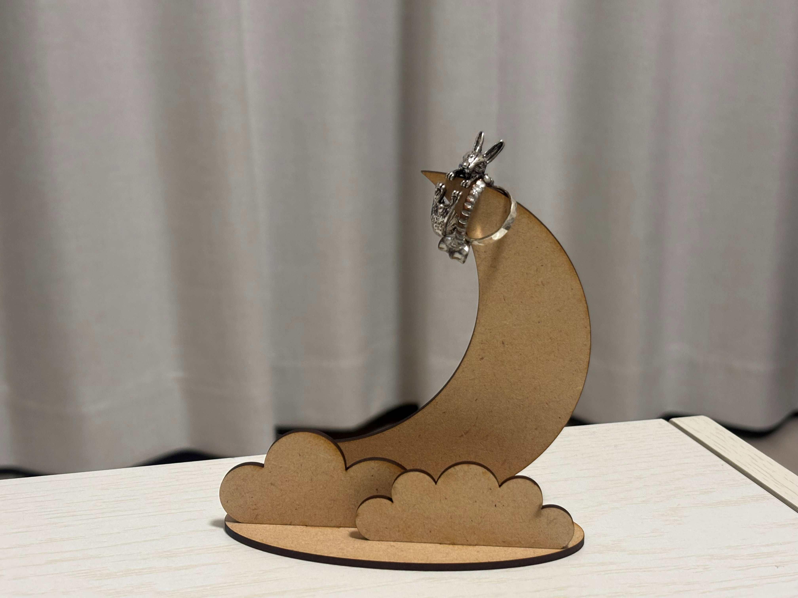

《スケッチ》

《完成品》


《設計ファイル》
DXFファイル
《作品の説明》
三日月と雲をモチーフにした指輪スタンドです。
M!LKさんの「時空超えてユニバース」の衣装から着想を得て、月を取り入れました。
三日月の先端に指輪を掛けられるようにし、雲を組み合わせることで立体感を出しました。
今回は私自身が好きなアーティストの衣装から受けた印象や月や星に対する憧れをデザインに取り入れました。
見る人に可愛いと思ってもらうだけでなく、作品を通して幻想的な世界観や自分の好きなものへの気持ちが伝わることを大事にしました。
時空超えてユニバースの衣装はこちら♪
《制作の中で調べたこと》
スプラインの使い方をマスターするため調べました。
スケッチにスプラインを作成する